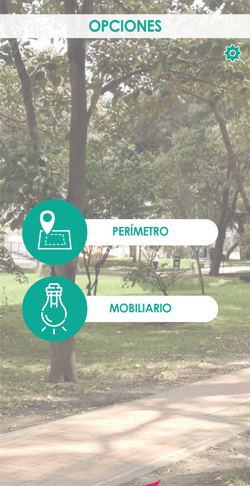

<ion-content class="background-image">

    <ion-card>
    
      <button class="rise" (click)=perim()>PERIMETRO</button>
      <button class="see" (click)=mobil()>MOBILIARIO</button>
      <button class="home" (click)=login()>home</button>
       
    </ion-card>
  
  </ion-content>